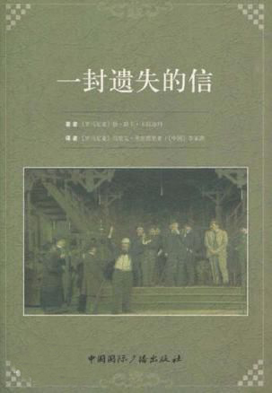
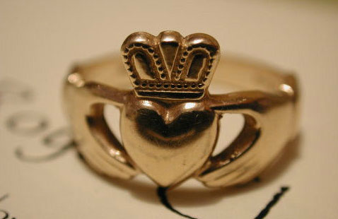

2016-10-18阅读（809）

【跟着选手学演讲】
出场宣言：
我叫高博睿。四是四，十是十，你的绕口令比我强吗？
精彩段落：
我是来自罗马尼亚的高博睿，我学习汉语快三年了。可是革命尚未成功，同志仍需努力。今天我想送给汉语桥的一个礼物，是一本书，名字叫《一封遗失的信》。在我们的国家，这本书很有名，也被翻译成了汉语。我希望通过这个小礼物，我们不仅可以练习汉语，同时也可以让罗马尼亚的文化，在汉语桥这个世界文化交流的舞台上展现出来。我们都来自五湖四海，为了参加这次比赛，我们在这里相遇。但是有朋自远方来，不亦乐乎，这次比赛让我认识很多远道而来的朋友，真是一件幸事呀。
出场宣言：
我叫王百雪。我很喜欢还珠格格，我想成为汉语桥的小燕子。
精彩段落：
爱美的女孩身边都有一个必不可少的东西，你们知道是什么吗？是耳环嘛！大家看我手里的这个耳环和普通的是不一样的，它叫“克拉达”，它的两边有两只小手，手里捧着的是一颗心和皇冠。这个漂亮耳环的背后，还有一个美丽的故事，有一个叫“克拉达”的男生，被海盗抓走了，他心爱的女孩，见不到了。他非常想念她，于是就做了一个戒指，为了寄托相思。八年以后他终于回到了家乡，他心爱的女孩儿还在等待他的归来。现在它已经成为了忠诚和坚贞的象征，今天我把这对耳环送给汉语桥，来表达我对汉语的“忠贞”。
出场宣言：
我叫苏墨安。我想把葫芦丝和孔雀舞展示给大家
精彩段落：
我非常高兴来和大家一起分享，我带来的一件小礼物，一只美丽的大公鸡。大家看，公鸡在乌克兰，象征着阳光、希望，它守护着家庭和我们的幸福生活。学习中文之后，我惊喜的发现“鸡”在中国同样象征着“大吉大利”，和“鸡”有关的成语也是既形象又有哲理。例如，雄鸡报晓、闻鸡起舞、金鸡独立等等。更巧的是，在地图上，中国看上去就好像一只引吭高歌的雄鸡，昂然挺立于世界的东方。我衷心祝福你，中国。

出场宣言：
我叫罗正阳。我要用正能量，扬起梦想的风帆，让梦想变成现实。
精彩段落：
提起俄罗斯，最先映入大家脑海的是什么呢？我猜很有可能就是那冰天雪地的严冬，没错！俄罗斯的有些地区确实非常寒冷，甚至是哈气成霜、滴水成冰。不过我要告诉大家的是，冬天其实是个非常棒的季节。冬日能给我们带来很多乐趣，同时也是运动的好时机。当然，为了能更好地享受冬日所带来的乐趣，你们就需要用到一些特殊的装备了。生长在冰雪王国的我，之所以不怕冷，不光是因为我有太阳搬温暖的名字，还多亏了俄罗斯的“岁寒三友”，那么现在我就隆重的向大家介绍我带来的礼物。这顶厚实松软的暖帽，这双防寒的手套，和这条温暖的围巾，有了俄罗斯的“岁寒三友”，你们也一样可以不畏严寒。可以充分去领略俄罗斯冬日的无穷乐趣
【礼物扫描】
一封遗失的信

《一封遗失的信》代表着卡拉迦列一生文学创作的巅峰，也是罗马尼亚文学史上最有价值的喜剧作品。它将一个山区县的首府在确定议员候选人时发生的一系列事件展现在话剧舞台，讽刺了十九世纪最后几十年在罗马尼亚的社会和家庭生活中存在的不良风尚。
这是一种文化的交汇。通过翻译加深了解，对于中罗两国相互尊重、有着友好和交流传统的人民来说，起着重要的作用。拉迦列的作品尽管描绘的是十九世纪下半叶 罗马尼亚的社会现实，但它刻画的人物及其种种习性，在任何一个社会都可以找到。每一个社会都存在着人与人之间的竞争，人们有自己的弱点、野心和用于支撑这 种竞争的潜能。
克拉达戒指

克拉达戒指诞生于公元17世纪的爱尔兰克拉达渔村，这个渔村就坐落在高威城的老城墙外。戒指的传说已在爱尔兰延续了400多年。
传说的版本众多。
其中之一是关于一位名叫罗伯特•乔伊斯的男子，他远离家乡到西印度工作并打算在回到家乡之后和他的爱人结婚。但是不幸的是他的船被困，他被卖到摩尔斯的一个金匠做奴隶。他跟随他的新主人到了阿尔及尔，并学习了锻造金饰的技艺。 威廉二世继承王位之后，他命令所有的摩尔人释放英国犯人。金匠很欣赏罗伯特，允诺把自己的女儿和一半的家产给他，只要他留下来。但是罗伯特拒绝了。他回到了家乡，把自己曾经学艺时打造的戒指送给了他的爱人。后来他们结婚了。
另一个传说是关于一个喜欢上普通女子的王子。为了向这个女孩子的父亲证明自己的坚贞，证明自己并不是在利用这个女孩子，这个王子打造了克拉达戒指向这名女孩子求婚。当女孩的父亲听说了戒指的含义之后同意把女儿嫁给王子并送上了自己的祝福。
还有一个传说是关于玛格丽特•乔伊斯，另一名来自乔伊斯家族的人。据说她 嫁给了一名西班牙商人并跟随他去了西班牙，不幸的是后来这名商人死了，留给玛格丽特一大笔的遗产。玛格丽特带着这笔钱回到爱尔兰，并嫁给了当时的高威市 长。出于慈善，玛格丽特用她继承的遗产资助了康诺特省的桥的建设。有一天，一只鹰衔来了一只克拉达戒指，并把它放在玛格丽特的膝盖上作为回报。

【有关汉语桥】
“汉语桥”是由孔子学院总部/国家汉办举办的国际中文赛事，是世界人文交流领域的知名品牌活动 。“汉语桥”中文比赛已成为外国学生学习汉语，了解中国的重要平台，在中国与世界各国青年之间架起了一座沟通心灵的桥梁。